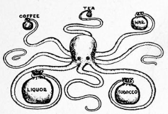
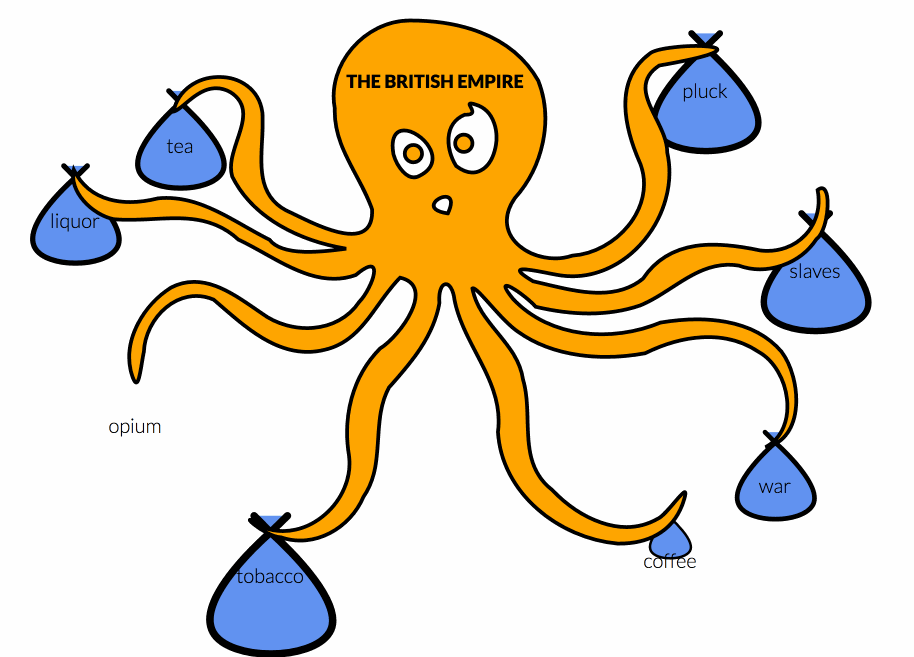
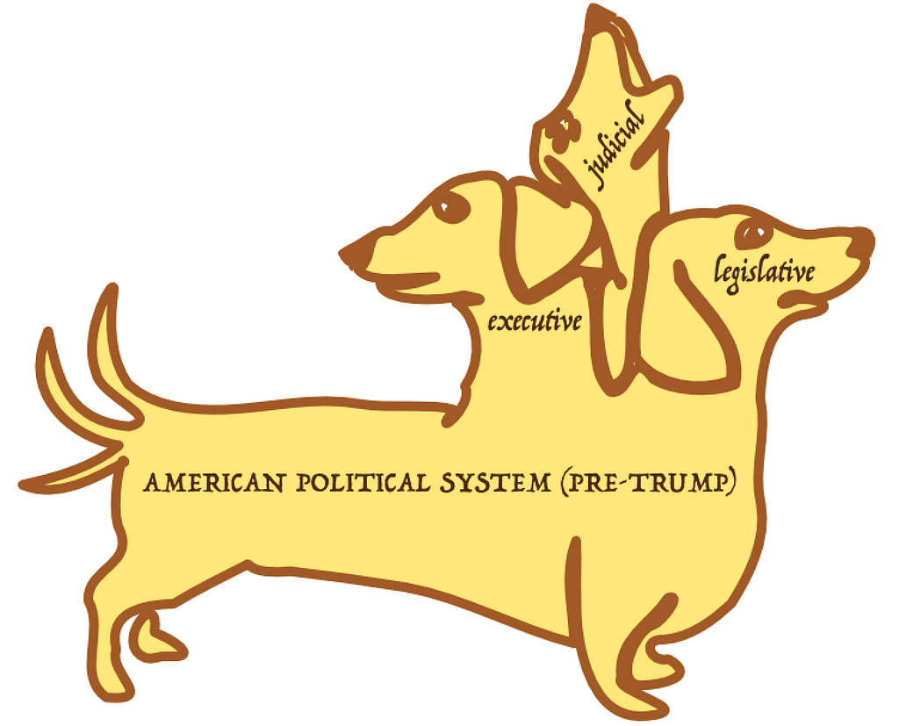
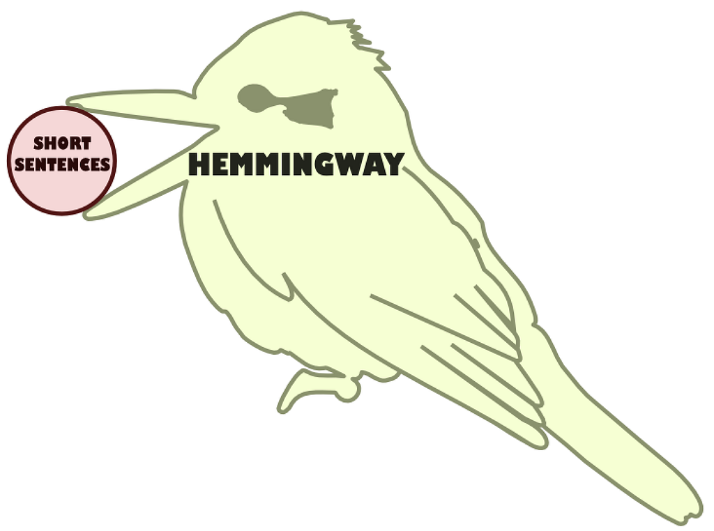
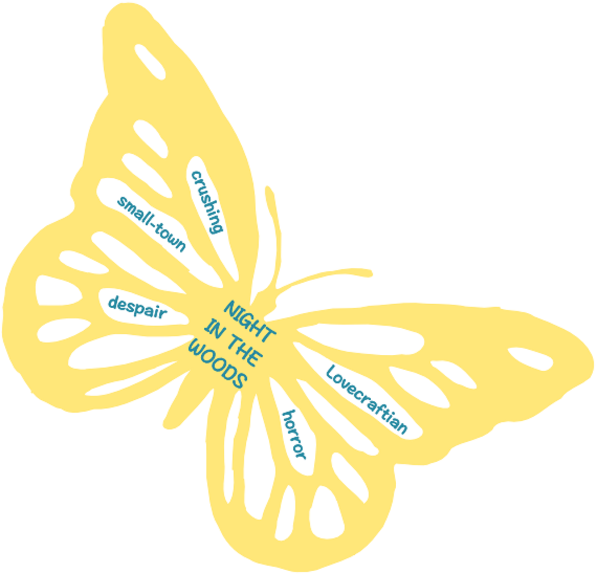

This was an April Fool’s joke.
But following Chaucer, “Ful ofte in game a sooth I have herd” and in that vein there are some ideas here that I feel are worth pursuing, and I’ll probably build a very simple version of a cephalopod chart generator at some point. No joke.
While data visualization has grown increasingly better at handling the representation of numerical data, the same techniques struggle when trying to represent systems. Systems surround us, we’re embedded in them, and yet, ironically, we do a terrible job of representing them systematically. Recent work like Loopy by Nicky Case have done a good job of representing abstract systems but what about real systems based on observable structure?
It’s not like there aren’t great examples of representations of systems, and the vast majority of these examples use animal metaphors in their visual display. Like this representation of the structure of Imperial Britain and its constituent pieces.

While these system visualizations are powerful and analytically valuable, the only way you can deploy them is to use bespoke tools for producing systems visualization, like Illustrator or Modernism. This is solved with animalia.js, a library for doing animal-based system visualization. This library takes a structured description of the system and renders a visualization based on the following factors:
- Number of sub-parts
- Part Relationship (Collaborative, Subordinate, Competitive)
- Semantic Quality (Positive, Negative, Mixed)
Following the example above, an eight part system with a negative semantic quality and subordinate relationship of the sub-parts to the whole can be represented quite easily:
const systemImperialBritain = animaliaSystem()
.parts(["coffee","tea","war","liquor",
"tobacco","pluck","slaves","opium"]
.semantics("negative")
.relationship("subordinate")
.label("British Empire")
The result depends on whether and how we define values, generating the drawing instructions and transition data necessary for a wide variety of appropriate diagrams. This follows a pattern I’ve described before: distilling historical visualization methods into reproducible drawing functions, such as my exploration in an earlier piece on the remaking of W. E. B. Du Bois’ data visualization products. As with that work, the value of creating reusable components and layouts is not just in recreating a single diagram, but in animating and extending that diagram. So the code above easily allows us to bring that original system visualization into a modern and infinitely more effective data visualization milieu, integrating animation and color to create a dynamic octopus chart that adjusts the shape of the contributing factors over time.

The cephalopod is a favorite phenotype for these kinds of charts, and playing fast and loose with the number of its tentacles and its basic morphology is a well-worn tradition in animal-based system visualization. And I suppose I could have been focused on creating the most efficient layout and animation of cephalopod style information display. But I think if animalia.js was just an octopus chart generator, that would seem a little silly. Instead, this library takes into account the cardinality of the parts along with the relationship and semantic quality of the system to show the most appropriate animal.
Let’s see that with a common class of systems desperately in need of visualization: political systems. Forms of government vary across the world and throughout history, but other than a few paltry diagrams of unicameral and bicameral seating in various legislatures, these systems are practically unrepresented. But with animalia.js, you can see a more effective and compelling representation of even the most complex systems:
const americanGovernmentPreTrump = animaliaSystem()
.parts(["executive", "legislative", "judicial"]
.semantics("negative")
.relationship("competitive")
.label("American Political System (Pre-Trump)")
These settings naturally produces a cerberus visualization:

You might be surprised to discover that not all systems are evil. A mixed system, like the author Ernest Hemingway, is neither positive nor negative, and only made up of a single sub-part:
const hemingway = animaliaSystem()
.parts(["short sentences"]
.semantics("mixed")
.relationship("collaborative")
.label("Hemingway")
Again, animalia.js produces the most appropriate animal themed diagram.

The benefits of the kookaburra diagram are really best seen in dynamic applications, for instance when the kookaburra swallows the old sub-part and plucks a new one when the part datatype changes.
Despite their extreme rarity, animalia.js does support semantically positive systems.
const nitw = animaliaSystem()
.parts(["crushing small town despair", "Lovecraftian horror"]
.semantics("positive")
.relationship("collaborative")
.label("Night in the Woods")
Again, another actionable system visualization suitable to be deployed in a dashboard or report.

The library’s name has a double meaning. Animalia refers to animals, of course, but its latin formulation simultaneously refers to the taxonomic system in which animals are one part of how we organize and represent living things.
Obviously, higher dimensional systems are going to reduce the possibility space for animal choices. As a result, you’ll see animalia.js lean heavily on hydrae, millipedes, clouds, peacocks and schools of fish for when you are trying to represent several dozen or hundreds or more sub-parts. Since this is a first release, expect it to be a little rough around the edges in some of the transition tweening, especially when you change semantics. For instance, hydra heads turning into fish is fine, but the hydra body transforming into bubbles seems like it’s not the most natural transition. Research on the subject is mixed — likely because of how system visualizations like this have been almost entirely bespoke before now. Also, the hierarchical nesting isn’t very sophisticated and with only a few options for each combination this can lead to nonsensical results, like a kookaburra diagram holding a unicorn diagram in its mouth. It’s my hope that the introduction and adoption of the library will lead to more implementations engendering increased research on the best methods for animal-based system visualization and transitioning.